Predicting Hospitalized Time of Covid-19 Patients
Supervised Machine Learning in Healthcare
Yu Huang
1. Intruduction
The outbreak of Covid-19 pandemic in 2020 caused tremendous equipment, materials deficiency and beds shortage problems in healthcare system across the U.S. [1]. The hospitals not only need to take care of the routine patients, but also need to take care of the sudden increased Covid-19 patients. A good planning and management of a hospital system becomes very important.
This article presents how new methods to use machine-learning to predict how long (in days) a Covid-19 patient needs to stay in a hospital at the time of admission. This can help hospital professionals to make an optimized planning for patient treatment and resources (e.g., room, bed, etc.) allocation. This also could reduce the amount of hospital visitors and so decrease the chance of staff and visitor infection.
The rest of this article is arranged as follows:
- Data understanding
- Data preparation
- Modeling
- Model evaluation
- Deployment
1. Data Understanding
The dataset is obtained from Kaggle's website [1]. There are three files used in this article:
train_data.csv: containing features related to patient, hospital and Length of stay (label)
test_data.csv: containing features related to patient, hospital. Need to predict the "length" of stay for each case id
train_data_dictionary.csv: containing the information of the features in train and test files.
As shown in Figure 1, there are total 17 features and 1 label column (Stay) in this dataset.
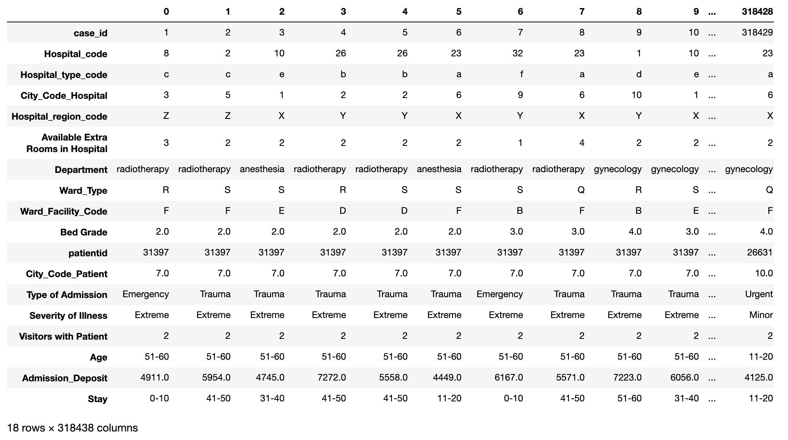
Figure 1: Transposed view of the train dataset.
Figure 2 shows the distribution of the following numeric features:
- case_id
- Hospital_code
- City_Code_Hospital
- Available Extra Rooms in Hospital
- Bed Grade
- patientid
- City_Code_Patient
- Visitors with Patient
- Admission_Deposit
It can be seen that the case_id feature values are uniformly distributed
over bins because they are unique sequential numbers.
This feature can be dropped due to lack of prediction power.
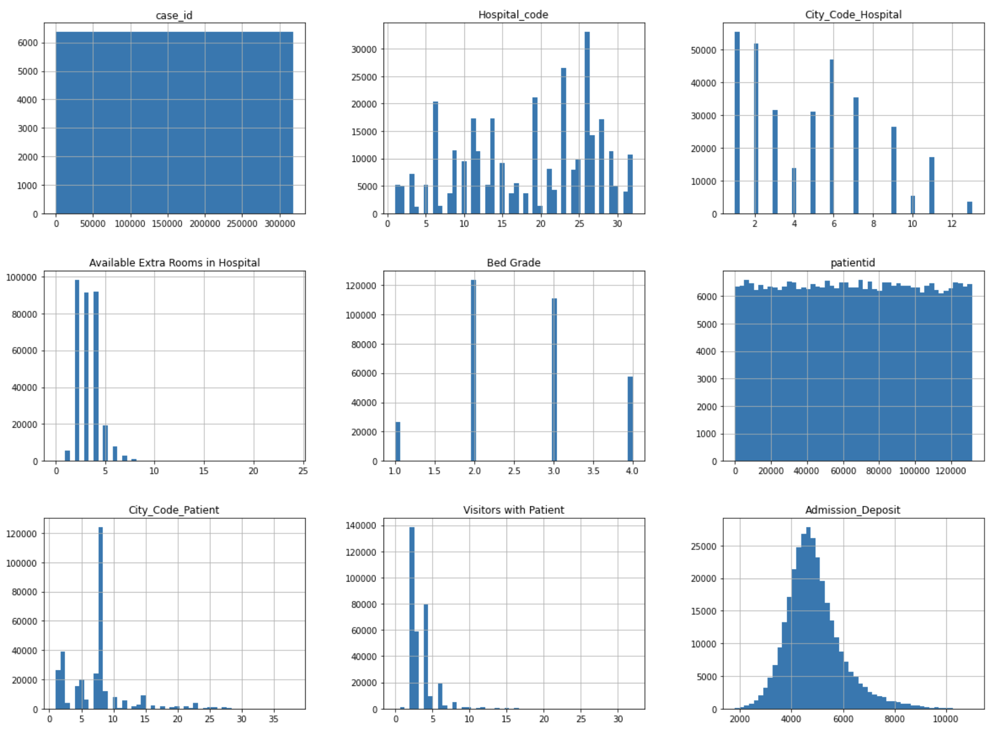
Figure 2: Distribution of numeric features.
Figure 3 shows the patient visit distribution.
We can see that many patients revisited the hospital many times
(from 10 up to 50). So patient IDs are important in prediction.
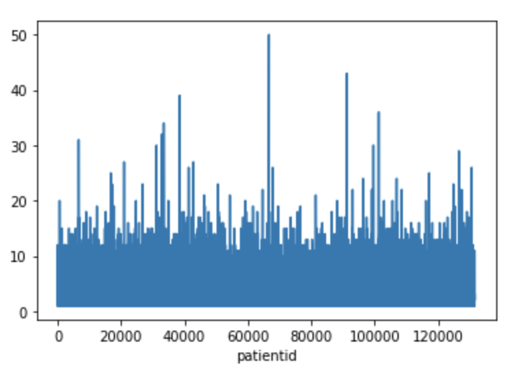
Figure 3: Patient visit distribution.
Figure 4 shows the distribution of the categorical features and label column:
- Hospital type code
- Hospital region code
- Department
- Ward Type
- Ward Facility Code
- Type of Admission
- Severity of Illness
- Age
- Stay (Label)
We can see that the distribution of the labels is significantly skewed to
the right. In other words, the data is not balanced.
There are very few data samples in the categories from '41–50' to '61–70'.
This will have significant negative impact on prediction power.
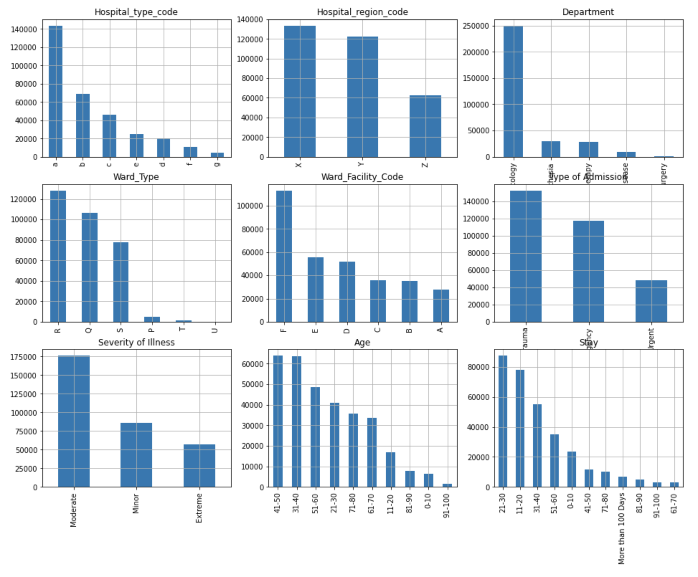
Figure 4: Distribution of categorical features.
2. Data preparation
With data understanding, The next step is to explore,
clean and transform the collected raw dataset into appropriate format
so that the transformed data can be effectively consumed by a target machine learning model.
2.1. Handling missing data
As shown in Figure 5, there are 113 missing data in the Bed Grade feature column
and 4,532 missing data in the City_Code_Patient feature column.
The total number of missing data is relatively small (total of 4,645)
compared with the dataset size of 318,438 rows.
In this case we can either drop the rows with missing data or replace missing data with 0.
I choose to replace the missing data with 0 in order to be able to predict results
for the test_data dataset with missing feature values in deployment.
Refer to the DataCleaning class in data_preprocessing.py for details [6].
train_data.isnull().sum()
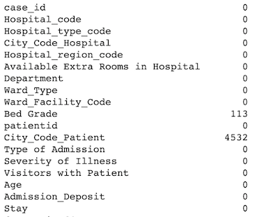
Figure 5: Count of missing data.
2.2 Dropping features (columns) without prediction power
As described before, the case_id feature doesn't have prediction power,
so it is dropped in this project (see the DataCleaning class in data_preprocessing.py[6]).
2.3 Categorical Encoding
2.3.1. Categorical label encoding
The label column Stay in this dataset is categorical. It must be transformed into numbers for categorical feature target encoding [7] and deep learning model. The LabelEncoder algorithm [8] is used for the transformation (see TargetEncoding and OneHotEncoding classes in data_preprocessing.py[6]).
2.3.2 Categorical feature target encoding
The advantage of target encoding [7] is that it does not increase the dimensionality of the dataset. It has been used in this project for transforming categorical features into numbers for ensemble machine learning models XGBoost [2] and Random Forest [3] because these models don't work well with one-hot encoding due to high dimensionality. See the TargetEncoding class in data_preprocessing.py[6].
2.3.3. Categorical feature one-hot encoding
For comparison, the popular one-hot encoding method is used for transforming categorical features as well for deep learning model (see the OneHotEncoding class in data_preprocessing.py[6]).
2.3.4. Other categorical feature transformation
I noticed that the categorical Age feature (e.g. "21–30") has more prediction power once it is transformed into numbers because the order of ages makes difference. In this project each range of age (e.g., "21–30") has been transformed into an average number like (21+30)/2 = 25.5 (see the OneHotEncoding class in data_preprocessing.py[6]).
2.4. Feature Normalization
The numeric features are normalized into the range of [-1, 1] for deep learning (see the FeatureNormorlization class in data_preprocessing.py[6]).
2.5. Data Splitting
Finally, the preprocessed dataset is divided into two subsets: one for model training and the other for model evaluation.
2.6. Data Preprocessing Pipelines
The data preparation steps 2.1–2.5 have been combined into data preprocessing pipelines for convenience:
- target_encoding_preprocessing
- target_encoding_preprocessing_for_prediction
- onehot_encoding_preprocessing
- onehot_encoding_preprocessing_for_prediction
See data_preprocessing.py for details [6].
3. Modeling
After data preparation, we are ready for modeling. The main goals of modeling include:
- Identify potential machine learning models
- Train models and tune the hyper-parameters of models
3.1. Model Selection
This project addresses a classification issue because the label is categorical.
This is suitable for supervised machine learning classification models such as XGBoost [2],
Random Forest [3], deep learning multilayer perceptron (MLP) classifiers [4].
Because the data is in tabular format and the number of features is relatively small,
XGBoost and Random Forest are generally preferred compared with deep learning models.
In this project XGBoost, Random Forest, and MLP classifiers are selected for experiments.
3.2. Model Training and Hyper-Parameters Tuning
Both XGBoost and Random Forest model training are performed with 10 folder cross validation.
Grid search is used for selecting the best combination of hyper-parameters.
Cross validation is also used for training the deep learning model.
See the following functions in train_test_classifier.py:
- build_xgboost_model
- build_rf_model
- build_deeplearning_model
4. Model evaluation
Once different machine learning models have been trained, the performance of these models needs to be evaluated so that we can select the best model for deployment.
The classification accuracy and confusion matrix are used as the main evaluation metrics for this project. Refer to the following functions in train_test_classifier.py for details:
- evaluate_xgboost_model
- evaluate_rf_model
- evaluate_dl_model
4.1. MLflow
In order to effectively tracking model hyper-parameters and performance metrics, the MLflow tool [5] is used. In particular, I developed the function mlFlow() in train_test_classifier.py to combine the following activities into one procedure:
- Loading training data
- Preprocessing data
- Training model
- Evaluating model
As an example, the following mlFlow() function call produces the results
(e.g., the confusion matrix in Figure 6) for a XGBoost model.
target_encoders, label_encoder = mlFlow()
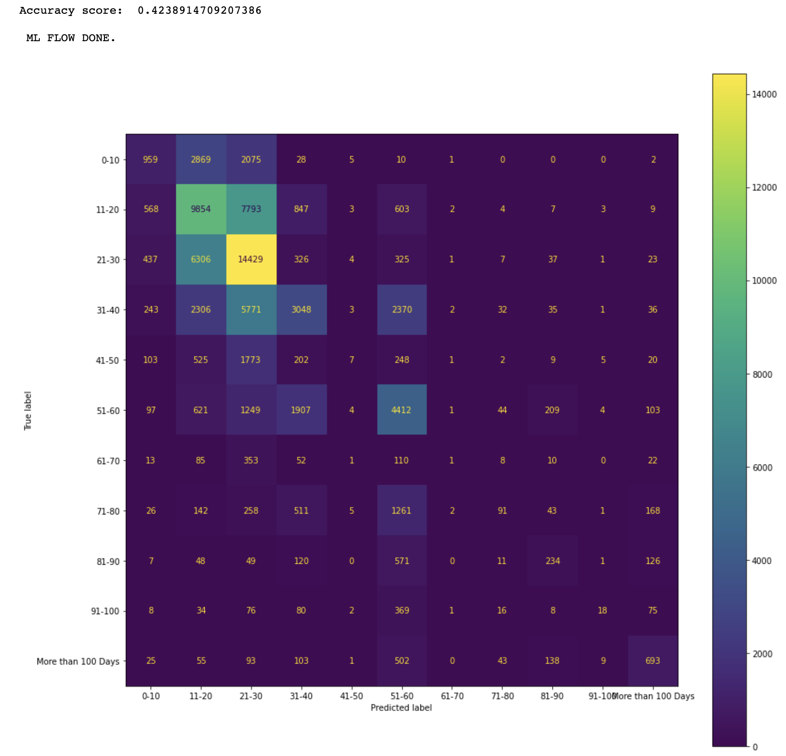
Figure 6: Confusion Matrix for a XGBoost model.
The confusion matrix in Figure 6 shows that the more data the better the prediction results.
For example, the maximum number 14,429 of true positives is in the category of 21–30.
Figure 7 shows the results of four model evaluations:
- XGBoost with target encoding
- Random Forest with target encoding
- MLP with target encoding
- MLP with one-hot encoding
We can see that XGBoost has the best performance in accuracy for the given dataset and
so we can select it for deployment if its performance meets business requirements.
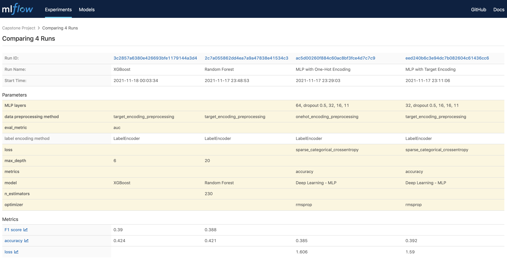
Figure 7: MLflow UI screenshot.
As shown in Figure 7, the best accuracy score is only about 42.4%.
This is because there are too little data in the majority of the labeled categories
such as the following ranges: 41-50, from 61-70 all way up to more than 100.
The accuracy score will increase if more data can be collected to balance the dataset.
As an experiment, I selected only the data samples in the categories of 11-20 and 21-30 and
noticed that the accuracy score was increased to about 63%.
Figure 8 shows the corresponding confusion matrix from a trained Random Forest model.
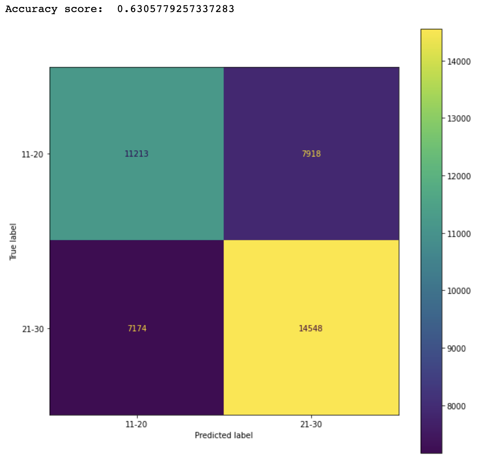
Figure 8: Confusion Matrix for a Random Forest model with two label categories.
In order to understand how different features impacted the prediction,
Figure 9 shows the feature importance produced by a trained Random Forest model.
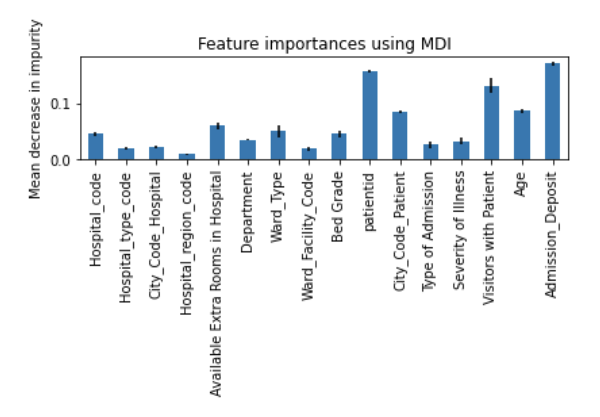
Figure 9: Feature importance produced by a Random Forest model.
I also looked into the correlations between the features and the target labels
as shown in Figure 10.
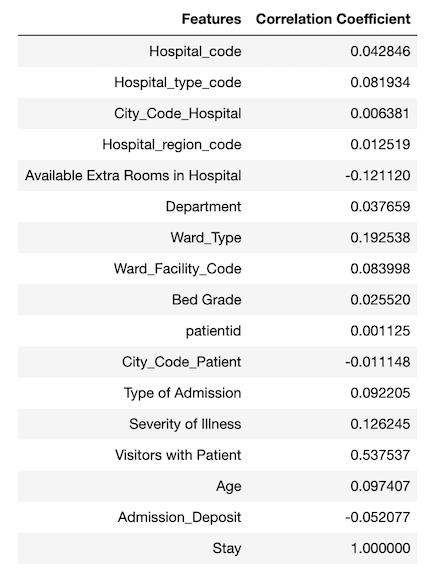
Figure 10: Features and target label (Stay) correlation coefficients.
It is tricky to use correlation coefficient to determine the strength of relationship
between a feature and the target because the correlation coefficient only indicates
linear relationship. A feature (e.g., patientid) with very low correlation coefficient
does not necessary indicate that there is no relationship between the feature and the target.
For example, the patient id has a very small correlation coefficient,
but its feature importance is high.
I tried to remove some of the features with low feature importance
(e.g., Hospital_region_code, City_Code_Hospital, etc.) and features with very small
correlation coefficients (e.g., City_Code_Hospital) and observed that it didn't help
to increase accuracy score.
5. Deployment
Once the best model has been identified for deployment in model evaluation,
we can move to the final step to deploy the identified model into a production environment.
One common deployment method is to deploy the model as a Web service on a server,
which can be called by other components in a target production system to predict results.
In order to support deployment, both the selected trained model (e.g., XGBoost) and the
related encoding objects (e.g., LabelEncoder object, TargetEncoder objects) are saved into
Python pickle files after model training. These saved encoding objects and model are to
be loaded back for prediction in deployment.
As an example, the following code loads in thetest_data.csv for prediction in deployment.
Figure 11 shows the transposed view of the loaded test dataset. Note that this dataset
does not have the label column Stay.
test_data = load_data('test_data.csv')
print(test_data.shape)
test_data.transpose().head(100)
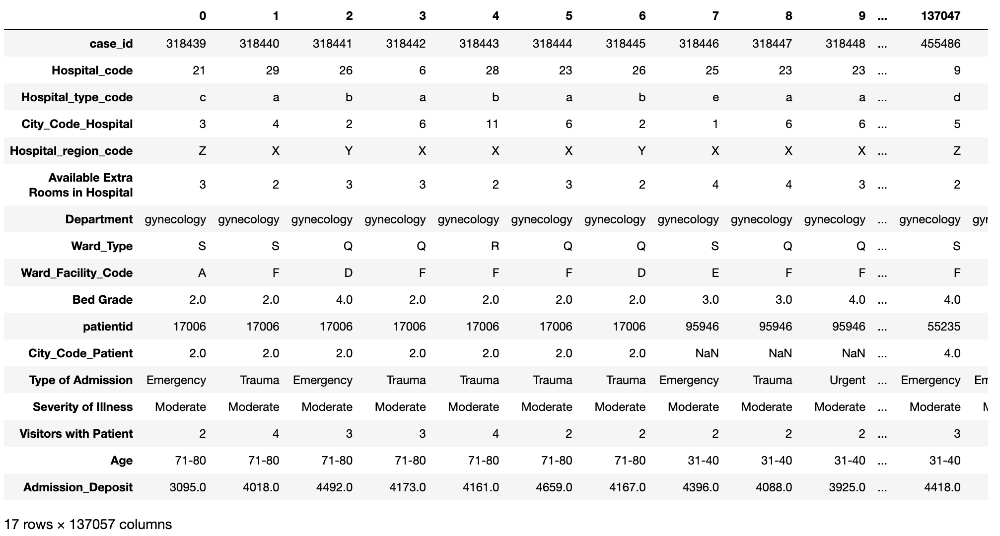
Figure 11: Test data before prediction.
The code below does the following:
- loading the saved model and encoding objects
- using them to predict the number of hospitalized days for each of the patients
in the test dataset
- showing the first 100 records in the resulting DataFrame with the features and
predicted labels (the Stay column) (see Figure 12)
- displaying the distribution of the predicted labels.
We can see from Figure 4 and Figure 13 that the distribution pattern of the predicted labels
in Figure 13 is very similar to the distribution pattern of the labels Figure 4.
label_encoder, target_encoders = load_encoders()
result_df = predict(label_encoder, target_encoders, test_data_file='test_data.csv')
result_df['Stay'].value_counts().plot(kind='bar')
result_df.transpose().head(100)
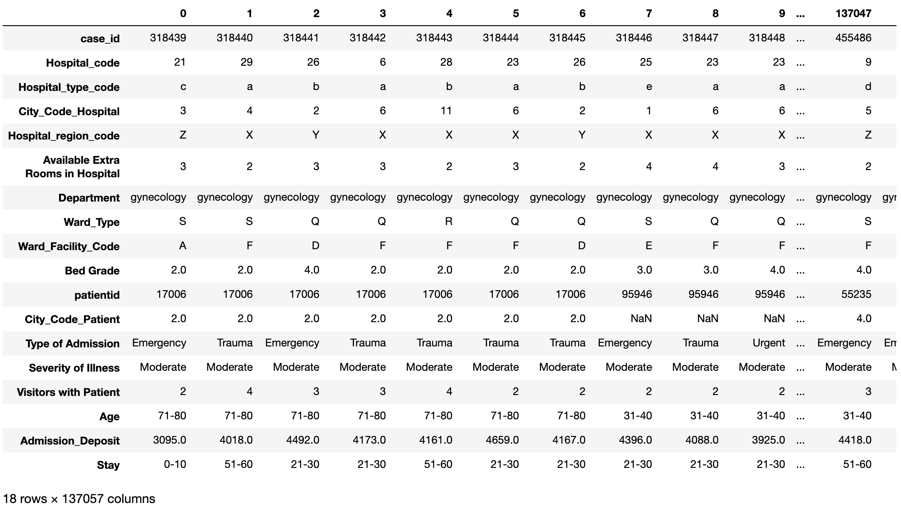
Figure 12: Test data with predicted labels.
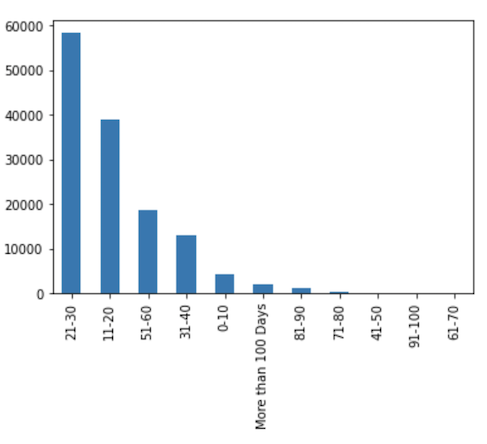
Figure 13: Distribution of predicted labels.
Summary
This article presented how to use different machine learning models to predict the hospitalized
time for Covid-19 patients using a challenging dataset from Kaggle [1].
This dataset is difficult in that it is a multi-classes single label case and the dataset is
significantly skewed.
The experimental results show that using XGBoost with target encoding achieved the best performance
in prediction accuracy (42.4%). This result is competitive to the results described in Kaggle [1].
References
- Covid-19 dataset in Kaggle
- XGBoost
- Random Forest Classifier
- Keras sequential model
- MLflow
- Source code in Github
- Target encoder
- Label encoder